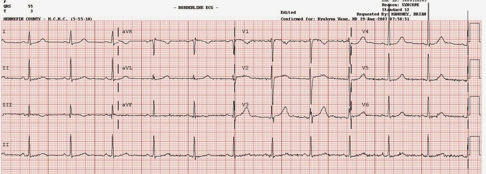
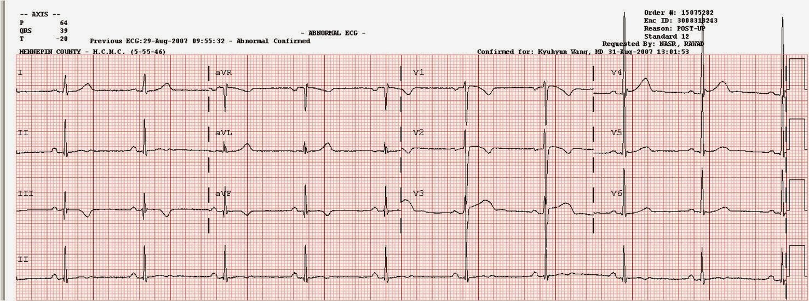
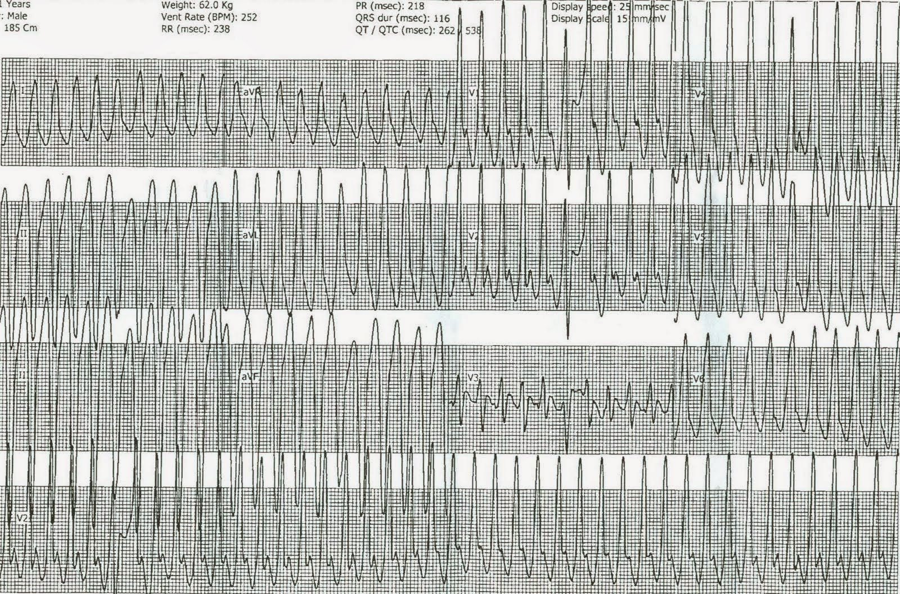
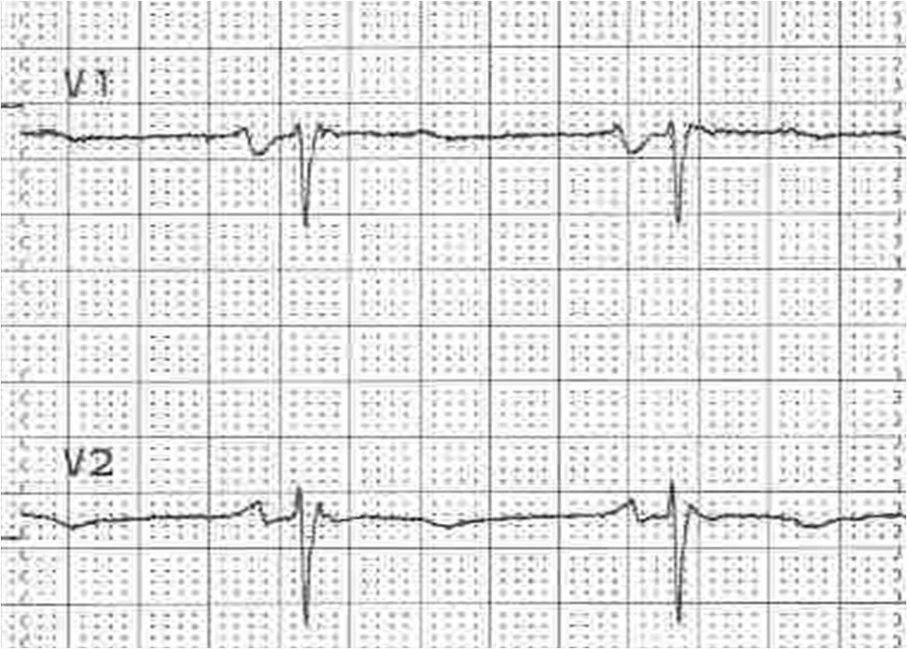

07/08/2011 — Nam thanh niên ngất khi đang đạp xe [Loạn sản thất phải gây loạn nhịp (ARVD)]
Bản dịch tiếng Việt của bài "Young man with syncope while riding a bike [Arrhythmogenic Right Ventricular Dysplasia (ARVD)]" – Dr. Smith’s ECG Blog. Giữ nguyên toàn bộ 4 hình ảnh của bản gốc.
Bệnh nhân 31 tuổi này, vốn khỏe mạnh, bị ngất đột ngột khi đang đạp xe. Anh nhớ là đã nhìn xuống, sau đó thấy choáng váng, rồi tỉnh dậy trên mặt đất với hai bàn chân vẫn còn gắn vào bàn đạp. Anh nghĩ rằng mình đã bất tỉnh một mình trong 45 phút (!). Sau đó anh tỉnh lại và gọi 911. Anh không có triệu chứng tiền triệu kiểu phản xạ phế vị (vasovagal) nào như đỏ bừng mặt, buồn nôn hay vã mồ hôi.
Anh có tiền sử hồi hộp đánh trống ngực vài năm nay nhưng không ngất, tuy nhiên đã có một cơn tiền ngất một tháng trước đó. Anh đã được một bác sĩ tim mạch ở địa phương khám 3 năm trước, với kết quả được ghi trong hồ sơ là điện tâm đồ bình thường và siêu âm tim bình thường, và đã được khuyến khích tập thể dục trở lại.
Đây là điện tâm đồ lúc nhập viện của anh tại khoa cấp cứu (ED):


Các triệu chứng của anh rất đáng báo động. Có 2 đặc điểm nguy cơ cao: không có tiền triệu nào ngoài choáng váng, và khởi phát khi gắng sức. Khi một người trẻ vốn khỏe mạnh đến khám vì ngất nguy cơ cao, khám thực thể bình thường và nhịp xoang bình thường (NSR), điều thiết yếu là phải ghi điện tâm đồ không chỉ để tìm thiếu máu cục bộ, các loại blốc như LBBB và RBBB, mà còn để tìm các rối loạn di truyền gây rối loạn nhịp. Có 5 bệnh mà tôi nghĩ tới: WPW, HOCM, Brugada, QT dài, và loạn sản thất phải gây loạn nhịp (Arrhythmogenic Right Ventricular Dysplasia – ARVD), một rối loạn do thâm nhiễm mỡ ở thất phải (RV), gây nhịp nhanh thất xuất phát từ RV, đôi khi gây tử vong. ARVD khá hiếm gặp, ít khi được nghĩ tới và rất khó nhận ra trên điện tâm đồ.
Tiếc thay, điện tâm đồ lúc nhập viện của chàng trai trẻ này không cho thấy dấu hiệu nào trong số đó.
Thật bất ngờ, troponin lần đầu trả về 3,44 ng/ml, lần thứ hai 7,48. Các bác sĩ lâm sàng nghĩ rằng họ đang đối mặt với một rối loạn nhịp do ACS/NSTEMI, và bắt đầu dùng heparin và aspirin. Anh được nhập viện.
Siêu âm tim cho thấy giảm động từng vùng chỉ ở mỏm thất phải. Đường viền ở phần này của thành tự do RV cũng bất thường, và làm dấy lên nghi ngờ ARVD.
Đã chụp MRI tim; đây là kết luận chính thức:
Có loạn động khu trú ở mỏm RV và thành trước. Trên chuỗi xung T2, có tín hiệu tăng dạng đường thẳng trong cơ tim RV, gợi ý thâm nhiễm mỡ. Không có ngấm thuốc muộn rõ ràng ở vùng này. Các dấu hiệu này gợi ý loạn sản thất phải gây loạn nhịp.
Thông tim mạch vành bình thường. Troponin có xu hướng giảm dần.
Đây là một điện tâm đồ khác ghi 3 ngày sau đó:


KẾT LUẬN CA BỆNH:
Anh được thăm dò điện sinh lý (EP) và kích phát được VT với tần số 252. Đây là cơn VT được kích phát:


Một tần số tim như thế này sẽ gây áp lực cho tim và dẫn đến phóng thích troponin.
Bệnh nhân đã được cấy máy khử rung tim (ICD).
ARVD, còn được gọi là bệnh cơ tim thất phải gây loạn nhịp (arrhythmogenic RV cardiomyopathy), ước tính có tỷ lệ hiện mắc 1 trên 5000 người trưởng thành và là nguyên nhân của khoảng 11% số ca đột tử ở người trẻ tuổi và 22% trong một nghiên cứu trên vận động viên ở miền bắc nước Ý. Chẩn đoán không dễ (xem bên dưới).
Đây là một bài tổng quan năm 2017 về ARVD trên New England Journal
Có một công bố năm 2010 của Nhóm chuyên trách (Task Force) về Chẩn đoán ARVD: Diagnosis of arrhythmogenic right ventricular cardiomyopathy/dysplasia: proposed modification of the task force criteria (Chẩn đoán bệnh cơ tim/loạn sản thất phải gây loạn nhịp: đề xuất sửa đổi tiêu chuẩn của Nhóm chuyên trách).
Toàn văn miễn phí: https://www.ahajournals.org/doi/pdf/10.1161/CIRCULATIONAHA.108.840827 (tiêu chuẩn chẩn đoán ARVC/D sửa đổi, Circulation)
Có 6 nhóm tiêu chuẩn:
1) Hình ảnh học
2) Giải phẫu bệnh
3) Tái cực trên điện tâm đồ
4) Khử cực trên điện tâm đồ
5) Rối loạn nhịp
6) Tiền sử gia đình.
Những điểm nổi bật về điện tâm đồ và bệnh sử trong công bố này (Nghi ngờ ARVD khi có):
1) Ngất nguy cơ cao không có nguyên nhân nào khác; Tiền sử gia đình
2) Bất thường khử cực (tiêu chuẩn chính):
a) Sóng Epsilon
b) Kéo dài khu trú (lớn hơn 110 ms) của phức bộ QRS ở các chuyển đạo trước tim bên phải (V1-V3)
3) Bất thường tái cực ở bệnh nhân từ 14 tuổi trở lên (vì bệnh nhân nhỏ tuổi hơn thường có sóng T thiếu niên)
a) Tiêu chuẩn phụ: Sóng T đảo ngược ở các chuyển đạo trước tim bên phải V1-V2
b) Tiêu chuẩn chính: Sóng T đảo ngược ở các chuyển đạo trước tim bên phải V1-V3 hoặc xa hơn (tiêu chuẩn chính)
4) Rối loạn nhịp
a) Tiêu chuẩn chính:
i) VT có hình thái LBBB với trục hướng lên trên (QRS âm hoặc không xác định ở các chuyển đạo II, III, aVF và dương ở chuyển đạo aVL) (tiêu chuẩn chính)
b) Tiêu chuẩn phụ:
i) VT có hình thái LBBB với trục hướng xuống dưới (QRS dương ở các chuyển đạo II, III, aVF và âm ở chuyển đạo aVL) (tiêu chuẩn phụ)
ii) Hơn 500 PVC mỗi giờ
5) Cuối cùng, đây là một bệnh tiến triển và những bệnh nhân chưa có bất thường điện tâm đồ có thể xuất hiện các bất thường này theo thời gian.
Đây là một ví dụ về sóng epsilon (hình C). Và một ví dụ khác. Đây là một số ví dụ tuyệt vời từ bài viết về loạn sản thất phải (được dịch bằng Google Translate!) trên trang web tiếng Pháp tuyệt vời của Pierre Taboulet: #1, #2, #3
Đây là một ví dụ tuyệt vời trên Wave Maven.
Đây là phần giải thích về tầm quan trọng của các chuyển đạo V1 và V2.
Đây là một ví dụ hay khác. Tôi đã mạn phép phóng to một phần điện tâm đồ tại đường link này để xem rõ hơn. Hãy nhìn kỹ V1-V2:


Một số tài liệu tham khảo xuất sắc về ARVD:
Đây là một báo cáo ca bệnh với nhiều thông tin hữu ích, từ năm 2019, nhưng bạn chỉ có thể đọc nếu có đăng ký American J Cardiol:
Holshouser JW và Littmann L. Usefulness of the Electrocardiogram in Establishing the Diagnosis and Prognosis of Arrhythmogenic Right Ventricular Cardiomyopathy (Giá trị của điện tâm đồ trong việc xác lập chẩn đoán và tiên lượng bệnh cơ tim thất phải gây loạn nhịp)
Các tài liệu tham khảo khác, từ bài báo nêu trên:
Tài liệu 1
FI MarcusEpsilon waves aid in the prognosis and risk stratification of patients with ARVC/D J Cardiovasc Electrophysiol, 26 (2015), tr. 1211-1212 CrossRefXem bản ghi trên ScopusGoogle Scholar
Tài liệu 2
FI Marcus, W ZarebaThe
electrocardiogram in right ventricular cardiomyopathy/dysplasia. How
can the electrocardiogram assist in understanding the pathologic and
functional changes of the heart in this disease?
J Electrocardiol, 42 (2009), tr. 136.e1-136.e5
Bài báo
Tài liệu 3
RNW Hauer, MGPJ Cox, JA GroenewegImpact of new electrocardiographic criteria in arrhythmogenic cardiomyopathy Front Physiol, 3 (2012), tr. 352 eCollection 2012 Google Scholar
Tài liệu 4
FI Marcus, WJ McKenna, D Sherrill, C Basso, B Bauce, DA Bluemke, H Calkins, D Corrado, MG Cox, JP Daubert, G Fontaine, K Gear, R Hauer, A Nava, MH Picard, N Protonotarios, JE Saffitz, DM Sanborn, JS Steinberg, H Tandri, G Thiene, JA Towbin, A Tsatsopoulou, T Wichter, W ZarebaDiagnosis of arrhythmogenic right ventricular cardiomyopathy/dysplasia: proposed modification of the task force criteria Circulation, 121 (2010), tr. 1533-1541 Xem bản ghi trên ScopusGoogle Scholar
Tài liệu 5
WC Roberts, N Kondapalli, SA HallUsefulness
of total 12-lead QRS voltage for the diagnosis of arrhythmogenic right
ventricular cardiomyopathy in patients with heart failure severe enough
to warrant orthotopic heart transplantation and morphologic illustration
of its cardiac diversity
Am J Cardiol, 122 (2018), tr. 1051-1061
Bài báo
Tải PDFXem bản ghi trên ScopusGoogle Scholar
Tài liệu 6
JE Madias, R Bazaz, H Agarwal, M Win, L MedepalliAnasarca-mediated
attenuation of the amplitude of electrocardiogram complexes: a
description of a heretofore unrecognized phenomenon
J Am Coll Cardiol, 38 (2011), tr. 756-764
Google Scholar